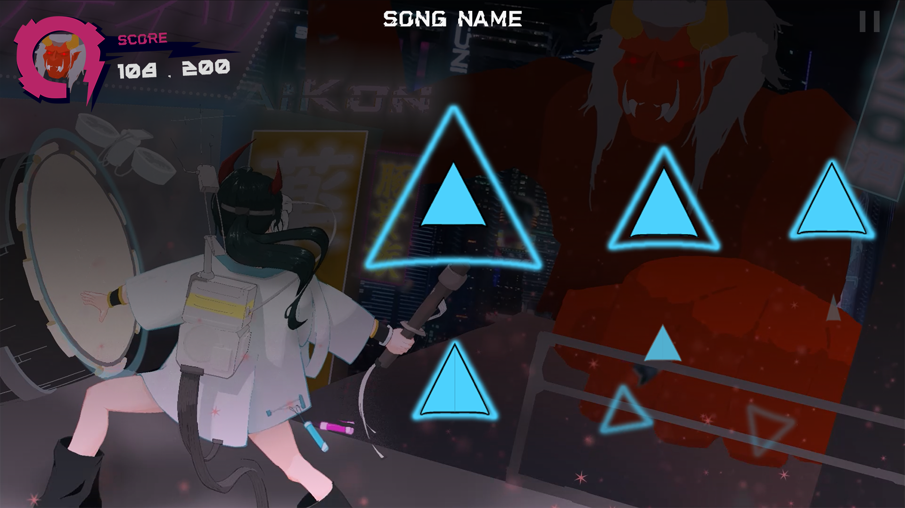

[Describe Lucid Rumination here — the core concept, the experience you were designing, and the high-level goal of the project.]
[What is the game about? What mood, theme, or emotion were you going for? What makes it unique?]
[Any inspirations, references, or design pillars?]

[How did you research the project? What references did you draw from — games, films, art, music?]
[How did your design evolve? What changed from your initial concept to the final product? What problems did you encounter and how did you solve them?]
[Describe specific decisions you made — systems designed, mechanics pitched, documentation written, etc.]
[What was the outcome of those decisions?]
[How did you coordinate the team? What production tools or processes did you set up — Trello, milestones, playtests?]
[What are you proud of? What exceeded expectations?]
[What would you change? What did you learn from this project?]